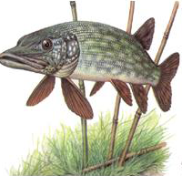
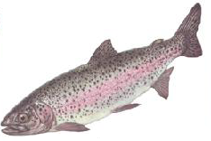
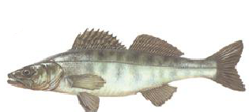
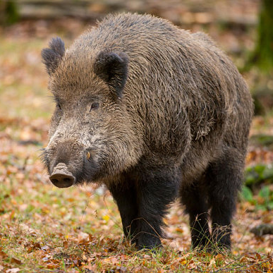
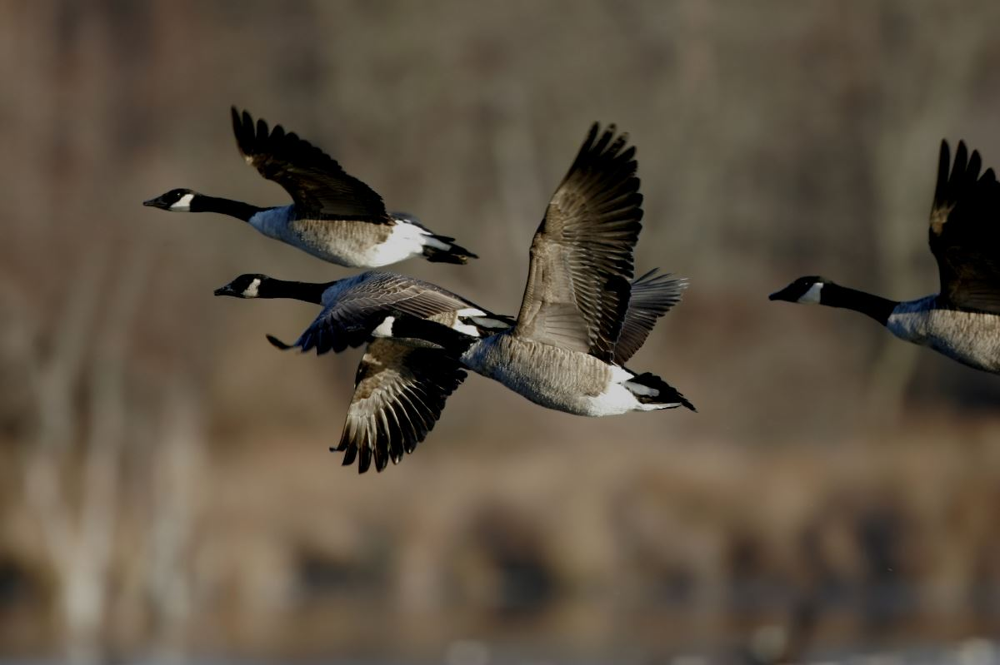
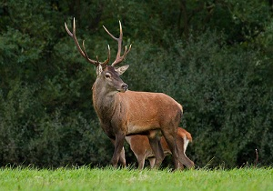
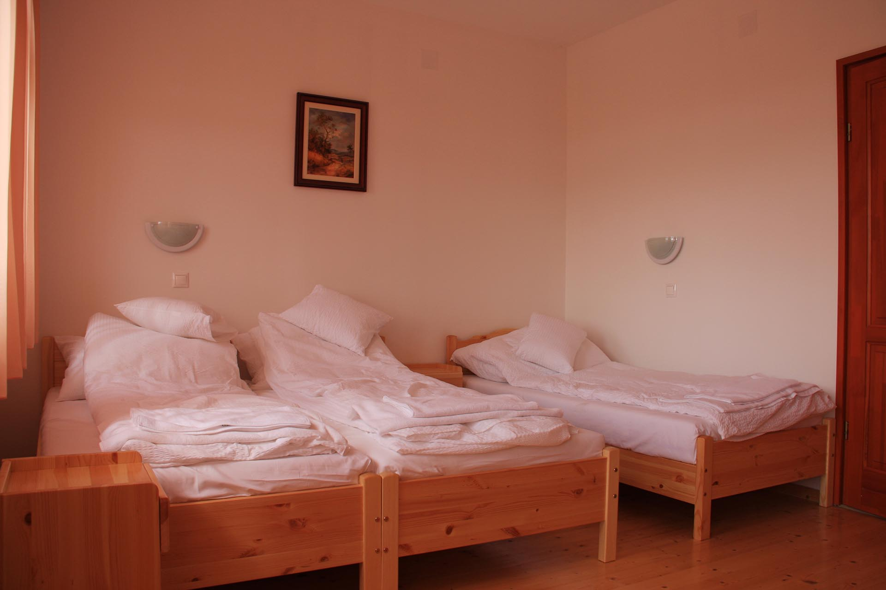

A pihenni, kikapcsolódni vágyó vendégek a környék kulturális is idegenforgalmi látnivalóit, nevezetességeit is élvezhetik. Az alföldi táj szépségei között kiemelkedő a közelben megtalálható mártélyi üdülőkörzet, ahol a Tisza holtág fürdési, csónakázási és horgászási lehetőséget biztosít. A közelben található gyógyfürdők közül kiemelendő a szentesi gyógyfürdő illetve a méltán híres Gyopárosfürdő, mely a vadászháztól mindössze 20 km-re található.
A fentiek mellett az Ópusztaszeri Nemzeti Történeti Emlékpark /Feszty Körkép, panoptikum, skanzen/ feledhetetlen kikapcsolódási lehetőséget nyújt, mely autóval 30 perc alatt elérhető.
A vadászházunk alkalmas egy vagy több napos találkozók, üzleti megbeszélések illetve továbbképzések lebonyolítására is.
Természetesen vadászati lehetőséget is tudunk biztosítani, a Károlyi és Weiss Manfred által tradicionálisan kialakított és méltán híres területeken, őzre, nyúlra, fácánra valamint vadkacsára.
6221 Derekegyház, Paptelek 80.
46.567709, 20.366053
A Zrt. Derekegyház község mellett kialakított egy 12 ha vízfelület- tórendszert, mely ideális helyet biztosít a horgászat szerelmeseinek, hobbijuk magas színvonalú műveléséhez. A tórendszer kialakítása során messzemenőleg figyelembe vettük a horgászok igényeit. A terület külön pavilonjai családi pihenésre is alkalmasak. A tórendszerben ponty, amerikai harcsa, csuka, amur, Lénai tok, keszeg fogható méret-, és idénykorlátozás nélkül, 3.000,- Ft/ft/nap belépődíj mellett.

Lapos fejő őshonos ragadozóhal ami szinte valamennyi édesvízünkben megtalálható a hegyvidéki patakok kivételével. Teste hosszúkás és erőteljes, a pikkelyek aprók, melyek átterjednek a fejre és a farokúszóra is. Színét meghatározza környezete és vizenként nagyobb eltérések is lehetnek. Hasa fehéres, úszói is tarkák. A leggyakoribb kinézet a sárgászöld, halványan csíkozott test. Feje lapos, orra a kacsa csőrére emlékeztet. Szája hosszúkás amiben tűéles fogak helyezkednek el.
Falánk ragadozó, áldozatára gyorsan, lesből, takarásból támad, és ritkán hibázik.
Ha mégis elvéti a támadást az első mozdulatra akkor nem üldözi áldozatát.
Szájából, kissé hátra, befelé hajló fogai közül nincs menekvés. Nagyobb példányai esetlegesen,
ritkán fürdőzőket is megharaphatnak, sekélyebb vizekben.

A pisztráng a Salmonidae család Salmoninae alcsaládjába tartozó egyes édesvízi halfajok köznyelvi neve.
A köznyelv a pisztráng elnevezést használja néhány nem ide tartozó halfaj megnevezésére is,
mint pl. Cynoscion nebulosus (pöttyös tengeri pisztráng).
A pisztrángok húsa olajos,[1] gazdag A és D-vitaminban, illetve Omega-3 zsírsavakban.

Egyik legnemesebb hazai ragadozó halunk a süllő és egyben a sügérfélék legnagyobb képviselője vizeinkben.
Feje hosszúkás, háta szürkészöld, oldala ezüstös színű. Szája csúcsbanyíló. A hátán kb. 10-12 sötét sáv látható,
hátúszói és farokúszója is foltos. Színe élőhelyenként változó amit a víz jellege és aljzata befolyásol:
a Balatoni süllők közismerten világosabbak más vizekben élőkhöz képest.
A vadászat azon tevékenységek összességét jelenti, amely a vadállatokkal való foglalatosságokat összegzi, beleértve a vadgazdálkodást, a vadvédelmet, az állatok gondozását, elfogását, elejtését. A vadászattal foglalkozó szakembereket vadásznak nevezzük .
Napjainkra a köznyelv a vadászaton általában azon tevékenységet érti, melyeket az állatok elejtése vagy elfogása érdekében folytatnak, húsuk vagy más részeik megszerzése, kikapcsolódás, szórakozás, valamint kereskedelem céljából. Vadásznak nevezhető ilyen módon a vadgazdálkodással foglalkozó szakember, de hozzá hasonlóan szintén vadásznak nevezik a vadakat kikapcsolódásból, szórakozásból kilővő azon civil személyt is, aki rendelkezik hivatalos vadászengedéllyel.
A vadászat a jogszerű tevékenységeket jelenti és nem foglalja magába az orvvadászatot, ami a jogellenes cselekmények neve. A vadászat fogalmát általában nem használják a háziállatok megölésére, veszélyes védett állatok kilövésére vagy kártevők fegyveres irtására sem.[1] Bár a vadászat magyarországi szabályozása tiltja a védett állatok elejtését, Semjén Zsolt javaslata szerint, aki egyben az Orgos Magyar Vadászati Védegylet (OMVV) elnöke, felül kell vizsgálni az elejthető állatfajok körét. A politikus a Magyar Vadászati Védegylet elnökeként a többi közt a szalonka tradicionális tavaszi vadászatának visszaállítására, továbbá több védett madár és emlős elejthetővé tételére, ragadozó madarak gyérítésére tett javaslatot 2011. szeptemberi beadványában[2].
A magyar jog szerint a vadászat a vadnak a jogszabályokban engedélyezett eszközzel, vagy ragadozó madárral és engedélyezett módon vadász által történő elejtésére, vagy elfogására irányuló tevékenység (vadászati törvény). A vadászat azonban nem csak állományszabályozás vagy a kárelhárítás eszköze. A vadászat ősi hagyományokkal, sajátos kulturális és etikai normákkal rendelkező sport,[3] amely gyakorlásának nem feltétele a vadgazdálkodásban való részvétel vagy közreműködés.
A vadászat és a csapdázás,[4][5] a vadon élő állatok hasznosításának két fő módja az emberiséggel egyidős tevékenységek, melyek céljai és módszerei az idők során sokat változtak. Az emberi faj a legutóbbi néhány tízezer évben jutott el arra a fokra, hogy a környezetében található vadállatok létszámát nagy mértékben tudta befolyásolni, sőt jó néhányat közülük kipusztított. Ez nem csupán az utóbbi évtizedekben volt így, régészeti adatok sora bizonyítja, hogy a hatékony vadászati eszközök megjelenése és elterjedése, valamint az emberi népesség terjeszkedése és létszámbeli növekedése számtalan nagyemlős és madárfaj kipusztulásával járt.[6] Ezek egyik fő oka az volt, hogy elődeink a környezetükben található vadat mértéktelenül hasznosították, mivel nem rendelkeztek azokkal a vadbiológiai ismeretekkel, amelyek a vadállományok tudatos kezeléséhez és megőrzéséhez szükségesek.

A vaddisznó elterjedési területe óriási, felöleli Eurázsia egészét, Ázsia déli részét és Indonézia szigeteinek egy részét is. Korábban élt a Brit-szigeteken is, de innen már kiirtották. Elterjedési területe Marokkótól keletre egészen Egyiptomig terjedt, felölelte az Arab-félszigetet, egész Európát, a Közel-Keletet, Közép-Ázsiát, Szibériát, Indiát, a Hátsó-indiai félszigetet, a Maláj-félszigetet, Kínát és Japánt is. Az indonéz szigeteken keletre egészen Flores szigetéig őshonos. Északon felhatol Skandinávia déli részéig és Dél-Szibériáig. Számos szigeten előfordul, ahol sok helyütt helyi alfajai alakultak ki, mint Szardínián, Korzikán, Srí Lankán, Hajnanon, Tajvanon vagy az Andamán-szigeteken.

Egész Európában, Ázsia és Észak-Amerika jelentős részén elterjedt, a Kárpát-medencében a leggyakoribb récefaj. A házikacsa őse.
Kóborló egyedei sokfelé eljutnak, így Afrikába, Közép- és Dél-Amerikába is. Az ember is segítette elterjedési területe megnövelését, mivel betelepítette az Egyesült Államok keleti részébe, a Bermuda-szigetekre, Ausztrália, Új-Zéland és Új-Kaledónia területére is. Onnan a faj sokfelé eljutott kóborlásai során, így a Csendes-óceán sok szigetén észlelték már. Ezen felül betelepítették a Francia déli területek több szigetére, így a Kerguelen-szigetekre, továbbá a Falkland-szigetekre és a Macquarie-szigetre is.

Ezen állatok ősei kancsilszerű alakokból tagozódtak ki valamikor a késő eocén kor folyamán. A szarvasok miocén kori ősei a mai pézsmaszarvasokhoz hasonlóan szarv nélküli állatok voltak. A leletek tanúsága szerint ezek az állatok az amerikai kontinensen alakultak ki, de csakhamar Eurázsiába is átkerültek, s egyes fajok bakjain megjelent már a szarvasagancs is, ami eredetileg egy egyszerű nyárs formáját öltötte magára. Őskori szarvasagancsok a Tiszából. (Damjanich János Múzeum, Szolnok). A ma élő fajokon lehet követni (az egyedfejlődés mintegy újra levetíti az evolúciót elénk), amint egy állat élete során egyre több ágat fejleszt az évenként levetett és újranövesztett agancsokon.
A Zrt. Derekegyház község mellett kialakított egy 12 ha vízfelület- tórendszert, mely ideális helyet biztosít a horgászat szerelmeseinek, hobbijuk magas színvonalú műveléséhez. A tórendszer kialakítása során messzemenőleg figyelembe vettük a horgászok igényeit. A terület külön pavilonjai családi pihenésre is alkalmasak. A tórendszerben ponty, amerikai harcsa, csuka, amur, Lénai tok, keszeg fogható méret-, és idénykorlátozás nélkül, 3.000,- Ft/ft/nap belépődíj mellett.

A lakások és az üdülők vagy azok egy részének valamint a hozzátartozó mellékhelyiségek és területeknek (kert) az arra jogosult szerv közvetítésével vagy e nélkül szállás céljaira ellenszolgáltatásért való használatba adása. Ezeket a helyiségeket is osztályba sorolják a szobák minősége, alapterülete, külön választhatósága, a forgalmas központoktól való távolsága, higiéniás berendezései, fűtési lehetőségei figyelembe vételével. Az árai szabad árformába tartóznak. Az I.-től a III.-ik osztályig sorolják be őket.
Motel Fajtáiút menti motel: Főforgalmi utak mentén néhány szobával rendelkeznek. Jó parkolási lehetőséggel rendelkeznek, Lefoglalásuk egy-egy éjszakára történik. - üdülőmotel: Kiránduló helyen lehetőség van hosszabb tartózkodási helyre. Szolgáltatásai az üdülőszállodához hasonlóak. - Elővárosi illetve városszéli motel: Létre jöttüket az általános garázshiány motiválja. Csendesebbek, olcsóbbak, mint a település központokban. Nagyvárosok kertes övezeteiben vagy azok környékén létesülnek, - Városi motel: Nagyvárosok belterületein találhatók garázsbiztosítással.
A Szallas.hu oldalán regisztrált szálláshelyek ajánlatai között a felhasználók többféle szűrő, például szállástípus, ellátás, wellness és egyéb szolgáltatások valamint fizetési lehetőségek szerint is kereshetnek. A portálon plusz költség nélkül, a szálláshelyek által kínált áron, a foglaláshoz és kapcsolatfelvételhez szükséges alapadatok megadásával lehet a kiválasztott szállást megrendelni. Az adatokat a rendszer továbbítja a szállásadónak, aki közvetlenül is visszajelezhetnek az érdeklődőnek a foglalással kapcsolatban. Az oldal ugyanakkor 2014-ben vezette be azt a rendszert, ami a valós idejű, pillanatnyi kapacitásokra alapozó foglalás lehetőségét is biztosít.[9] A vendégek a szálláshely szolgáltatásának igénybevételét követően értékelhetik az adott szálláshelyet. 2014 elején már több mint 180 ezer vendégértékelés volt elérhető az oldalon.
A galéria képzőművészeti alkotások bemutatására szolgáló fizikai vagy virtuális tér. A galéria a művészeti alkotásokat reprezentatív módon mutatja be időszakos vagy állandó kiállításon önálló vagy csoportos módon. A galéria működhet non-profit módon, ilyenkor működése hasonló egy múzeuméhoz, ha profitorientált, akkor általában a galériás vezeti, aki a művek értékesítéséből tartja fenn vállalkozását. Magyarországon a profitorientált galériák nagyobb számban (elsősorban Budapesten) 1990 után jelentek meg. A galériákat meg kell különböztetnünk a képboltoktól, amelyek rendszeresen nem szerveznek egy művész, művészcsoportosulás vagy koncepció mentén kiállításokat, hanem pusztán csak a műalkotásokat mutatják be eladási szándékkal. Egy galéria általában 10-20 művésszel dolgozik együtt szerződéses alapon.